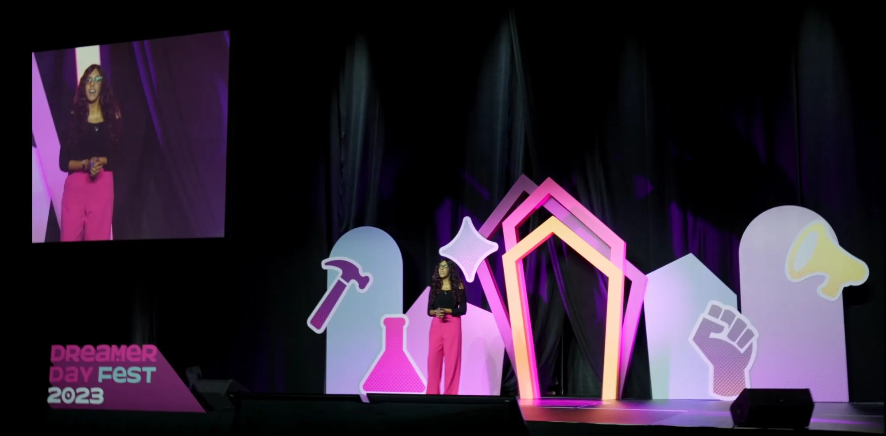

Speaking
Keynotes That Move
People to Action
Lauren delivers keynotes for corporations, government agencies, educational institutions, ERGs, and associations. Every talk is tailored to your audience and goals.
Trusted By
Past Clients & Speaking Engagements


Beyond What You See: Building Inclusion for Invisible Disabilities
Through personal stories and workplace insights, Lauren highlights the realities of invisible and non-apparent disabilities. She explores common myths, biases, and barriers, sharing practical ways organizations can foster awareness, empathy and an inclusive culture, so that all employees can thrive as their authentic selves.
Attendees Will

Bias, Belief and Belonging: Rewriting Narratives on Disability and Acceptance
This keynote explores Lauren's journey of embracing her invisible physical disability after 30+ years, common biases and beliefs around disability, and the transformative power of disclosure in fostering personal acceptance, community, and workplace inclusion.
Attendees Will

Seeking Strength: How to Build Resilience Through Small Moments of Joy
Lauren shares her journey from hiding her disability to fully embracing who she is. Through personal stories, she reveals how the pursuit of normalcy holds us back from confidence and connection. She introduces a simple three-step framework to help audiences let go of self-doubt, own their story, and show up fully in their lives.
Attendees Will
Watch
Speaker Reel
Lauren's Talks
Testimonials
What Clients Are Saying
She had a great balance between storytelling and knowledge transfer skills. After the session, I received several personal messages from our employees — they deeply appreciated the empowering space and energy Lauren brought. It got one of the top satisfaction ratings out of many employee learning sessions we hosted this year. One employee even stated it was one of the best learning sessions so far.
Senior Consultant, Employee Wellbeing – The Co-operators
Her presentation was phenomenal and very well received. It can be difficult to create engagement in a virtual setting but Lauren did a great job sparking discussion, and all of us were moved and inspired by her story.
VP, Operations & Pre-Claim Services – GroupHEALTH Benefit Solutions
When I saw the depth of questions that showed up in the chat, and some people who came off camera, I was like "this had real impact." It was an excellent 101 and it just opens up so many more questions on this topic, I really wish we had more time.
Senior Specialist, People Operations – Arc'teryx Equipment
Lauren delivered a motivating and impactful speech to the Class of 2024. Working with Lauren was seamless and fun. She followed the guidelines of what was requested and put deep thought into what she wanted to say.
Student Life Coordinator – University of Guelph-Humber
She was inspiring, innovative, and diverse with her delivery, and her desire to connect with the crowd was evident — which is essential for speaking to teens and educators.
Curriculum Head/Teacher – Peel District School Board
Lauren had a remarkable talent for educating listeners and turning her story into something anyone can connect with. What stood out most was her ability to connect with the young audience — whether through thought-provoking questions, relatable examples, or clear, practical takeaways.
Workshop Series Organizer – Monsignor John Pereyma CSS
FAQ
Frequently Asked Questions
Lauren offers three signature keynotes: "Beyond What You See: Building Inclusion for Invisible Disabilities" for workplace inclusion, "Bias, Belief and Belonging: Rewriting Narratives on Disability and Acceptance" on challenging disability biases, and "Seeking Strength: How to Build Resilience Through Small Moments of Joy" on her Daily Yay resilience framework. Each can be tailored to your audience.
Yes, Lauren is available for both virtual and in-person keynote engagements across North America. She has delivered highly rated virtual keynotes for organizations including Health Canada and McKesson Canada.
Lauren speaks to corporations, government agencies, Employee Resource Groups, educational institutions, and associations. Past clients include Health Canada, Arc'teryx, The Co-operators, McKesson Canada, Employment and Social Development Canada, the Rick Hansen Foundation, and the University of Guelph-Humber.
Absolutely. Lauren works with every client to tailor her content to the audience, event theme, and goals. Whether it's a 30-minute panel, a 60-minute keynote, or a half-day workshop, she'll customize the experience to fit your needs.
It's best to reach out as early as possible — Lauren's calendar fills quickly, especially around disability awareness dates like Invisible Disabilities Week (October) and International Day for Persons with Disabilities (December). That said, she'll always do her best to accommodate timelines when possible.
Perfect For
The above presentations are perfect for:
Events & Themes
- ✦Resilience-themed events
- ✦Belonging-themed events
- ✦Team-building and Lunch & Learns
- ✦Employee Resource Groups
- ✦Youth, Student & Young Adult inspiration events
- ✦Women's Empowerment events
Disability Awareness Dates
- ✦Rare Disease Month/Day (February)
- ✦Mobility Awareness Month, National AccessAbility Week & Global Accessibility Awareness Day (May)
- ✦Disability Pride Month (July)
- ✦National Disability Employment Awareness Month & Invisible Disabilities Week (October)
- ✦International Day for Persons with Disabilities (December)
Lauren also offers customized presentations based on your needs and interests. Reach out to discuss what you're looking for!
Let's Create Something Meaningful
Every talk is customized to your audience. Let's find the right fit for your event.
Contact Lauren